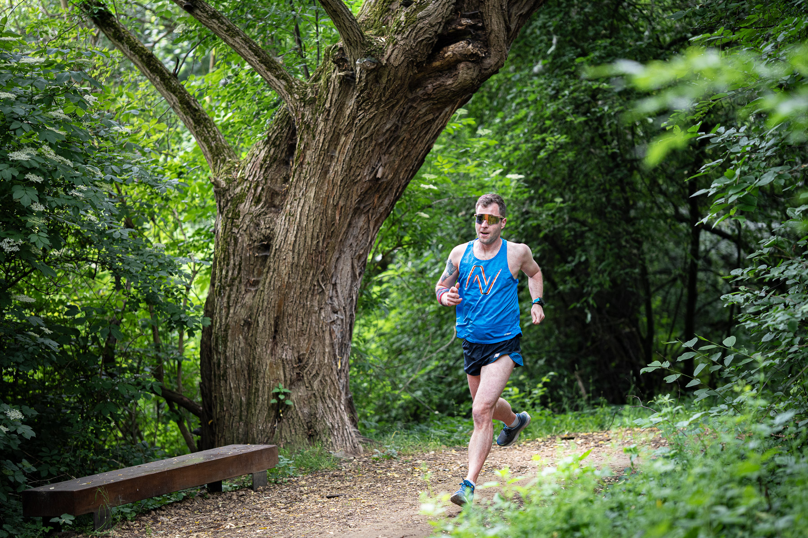
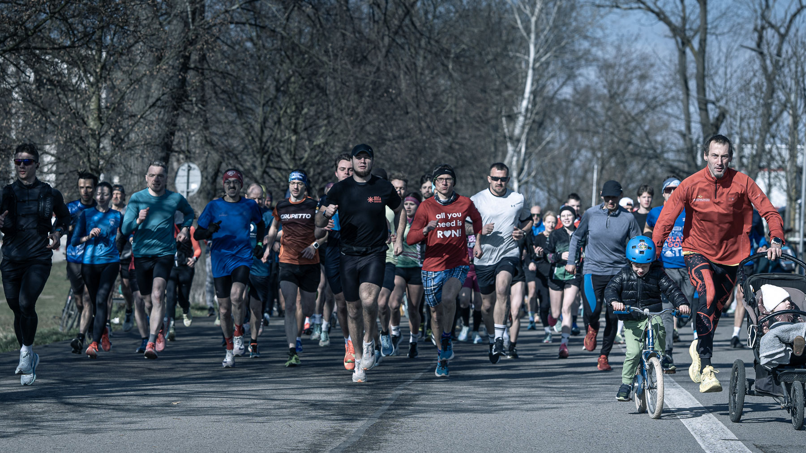

Faces of Parkrun
A photography project documenting participants of Parkrun events in Kraków, Poland, and surrounding towns. The series captures both individuals and groups in mid-run, showcasing the collective energy alongside moments of personal effort. Do not look for visual consistency between shots in this project. Rather, it is a set of various post-processing styles and moods, tailoring the aesthetic of the images to the weather, the location, or just the specific vibe of each run.




